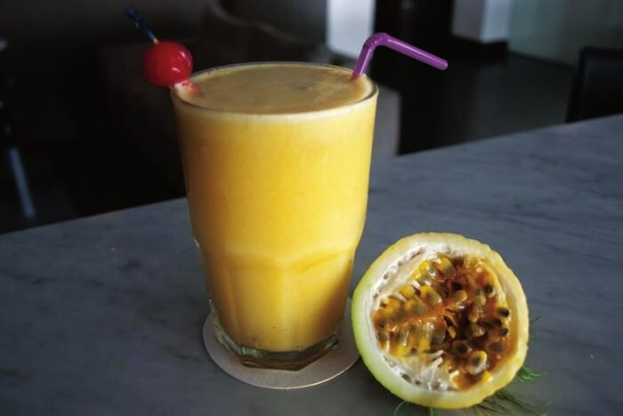
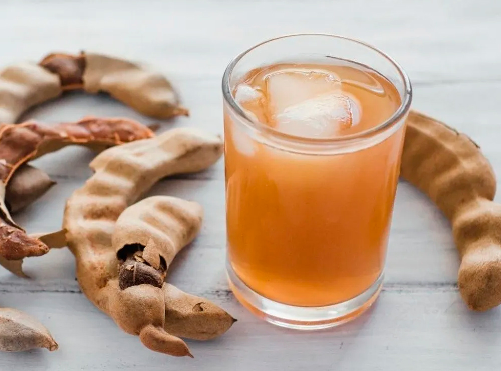
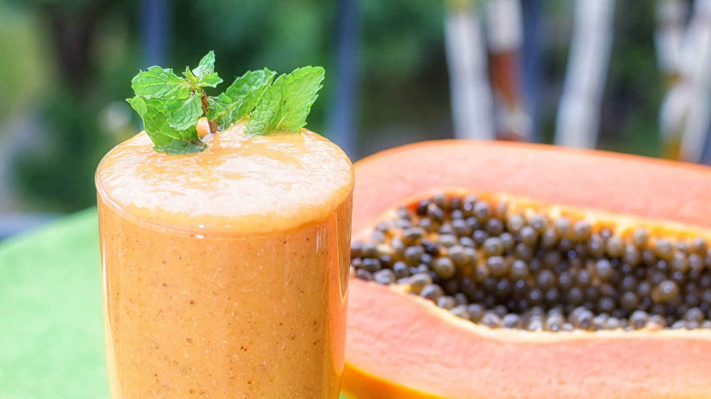
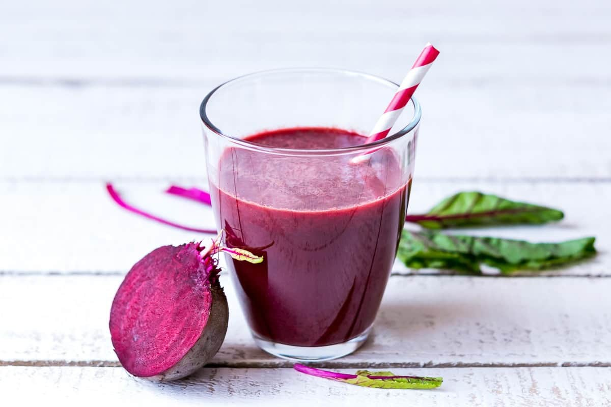

Morir Soñando
A refreshing drink made from orange juice, milk, sugar, and ice. It’s creamy, citrusy, and perfect on a hot day.

Other Popular Drinks
-
Jugo de Chinola (Passion Fruit Juice)
 -
Jugo de Tamarindo (Tamarind Juice)
 -
Batida de Lechoza (Papaya Milkshake)
 -
Jugo de Remolacha (Beetroot Juice)
 -
Morisoñando de Limón